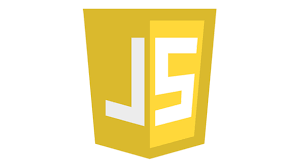

Education
BACHELOR OF COMPUTER SCIENCE | 2023-2026 | ASTON UNIVERSITY
A LEVELS | 2021-2023 | JOSEPH CHAMBERLAIN SIXTH FORM COLLEGE
- A Level English Literature
- A Level Sociology
- A Level Media Studies
Work Experience
IT support agent - Civico.io - 01/24 to present
Administrative assistant – M & M Deals Ltd – 06/23 to 08/23
Warehouse worker- M & M Deals Ltd – 06/23 to 08/23
Sales assistant- German Christmas Market UK Ltd – 4 months
Skills
Programming Languages-
 Python - Proficient
Python - Proficient
 Java - Proficient
Java - Proficient
Web Development-
JavaScript - Proficient
 HTML - Proficient
HTML - Proficient
 CSS - Proficient
CSS - Proficient
About me
As a first-year university student with a deep passion for technology, I am eager to explore and contribute to the vibrant landscape of tech companies. I bring a solid foundation in Computer Science acquired during my studies and am enthusiastic about applying and expanding these skills in a professional setting. I thrive on challenges and am committed to continuous learning, seeking opportunities to collaborate, innovate, and make meaningful contributions within the tech industry. I am excited about the possibilities that technology offers and am keen to engage in projects that drive innovation and growth.

"Great minds don't think alike."